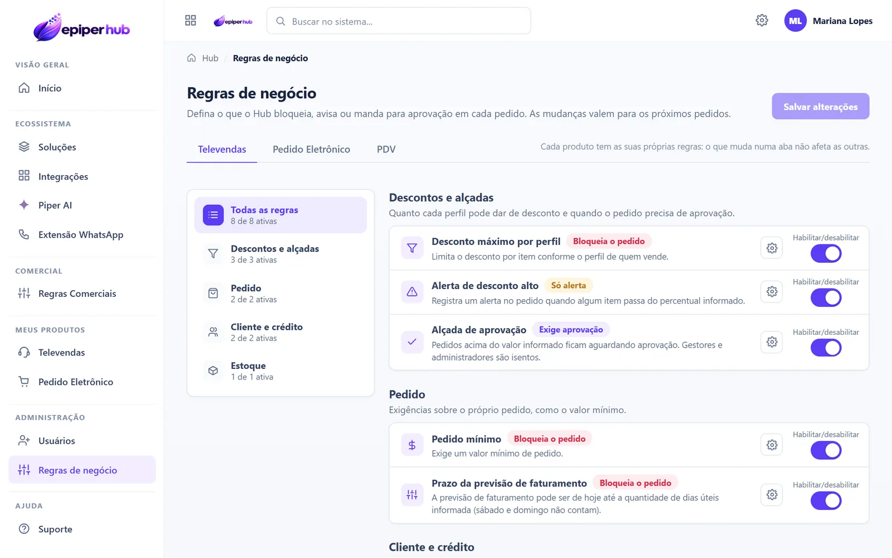

Diagnóstico
Entendimento do processo atual, usuários, ERP, dados e regras que precisam ser consideradas.
A configuração da Epiper é orientada pelo cenário real da empresa: ERP, regras comerciais, usuários, fluxos de pedido e infraestrutura disponível.
Cada etapa tem critério de avanço antes da próxima.
O escopo varia conforme o produto e o ERP, mas a implantação segue uma sequência para reduzir risco e validar o fluxo.
Entendimento do processo atual, usuários, ERP, dados e regras que precisam ser consideradas.
Definição da forma de integração, ambientes, acessos e responsabilidades do projeto.
Ver integrações →Preparação dos módulos, parâmetros e conexões necessárias para o cenário da empresa.
Testes de dados, regras, pedidos e retorno antes da entrada em operação.
A implantação precisa transformar o cenário comercial da empresa em configuração, integração e critérios de validação claros. O objetivo é chegar à produção com responsabilidades definidas e fluxo homologado.
Entendimento dos usuários, canais, regras comerciais e principais gargalos da operação atual.
Etapa 1Levantamento dos dados necessários, permissões, cadastros e pontos de integração com o ERP.
Etapa 2Parametrização do ambiente e construção do fluxo técnico conforme o escopo acordado.
Etapas 3–4Testes de ponta a ponta, validação com a empresa e acompanhamento inicial da operação.
Etapas 5–6Cada fase existe para diminuir retrabalho nas etapas seguintes. A homologação deve comprovar o fluxo que será utilizado em produção.

Funcionalidade, integração e processo precisam caminhar juntos. Estes são os pontos que mais influenciam a qualidade do projeto e a adoção da equipe.
O produto mantém uma base comum, mas integração, regras, usuários e validações variam conforme o ERP, infraestrutura e processo comercial de cada empresa.
A Epiper não parte da ideia de substituir processos sem entender o impacto. O objetivo é digitalizar o que faz sentido, validar e só então ampliar.
Informe o ERP, o produto de interesse e como o pedido funciona atualmente. Assim conseguimos estruturar os primeiros passos.